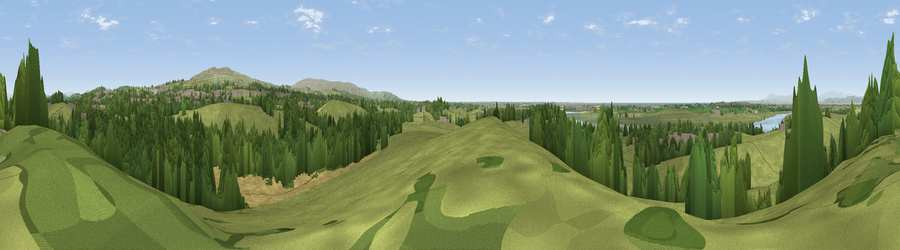

Viewpoint near Aldcliffe
#11845 in England · top 43% of its area beats it · near AldcliffeWhere it is
The exact computed spot (SD 46875 58875). Click the marker for map links.
The view, rendered

A 360° render of this exact spot computed from the terrain model, tree cover and land cover — summer colours, afternoon light, calibrated against photographs of famous viewpoints. Real trees, hedges and buildings will differ in detail.
The panorama
Grey silhouette: terrain skyline in each direction (720 bearings, Earth curvature and refraction included). Dashed green: skyline with trees (+15 m) and buildings (+8 m) as obstacles. Blue strip: how far the ground is visible on each bearing.
Where the view opens
Wedge length = distance to the farthest visible ground on that bearing (vegetation-aware). Rings at 10, 25 and 50 km.
What fills the view
66% grassland · 18% woodland · 6% cropland · 5% built-up · 4% water · 1% wetland
Angular shares of the visible panorama (visual magnitude), not map area. Landscape diversity 0.47 (0–1 Shannon).
Key numbers
More beautiful places nearby
The staircase of upgrades: each row has a higher view potential than everything closer. Driving times are estimates from straight-line distance, calibrated against real road routing — check an actual route before setting out.
| Place | Direction | Drive | Score |
|---|---|---|---|
| Viewpoint near Bailrigg | E · 3 km | ~7 min | 74.4 |
| Viewpoint near Quernmore | ENE · 7 km | ~15 min | 77.7 |
| Viewpoint near Quernmore | E · 8 km | ~15 min | 78.0 |
| Viewpoint near Scorton | SSE · 12 km | ~22 min | 79.9 |
| Warton Crag | N · 14 km | ~25 min | 83.2 |
| Viewpoint near Grange-over-Sands | NNW · 21 km | ~35 min | 83.4 |
| Viewpoint near Cartmel | NNW · 23 km | ~38 min | 87.0 |
| Viewpoint near Cartmel | NNW · 24 km | ~39 min | 87.2 |
54.02312, -2.81238 · source: screening · position refined by local search. Computed location — check access rights before visiting.